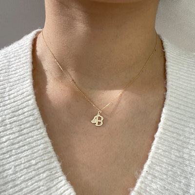
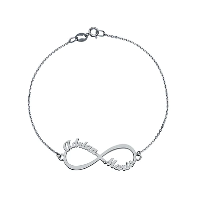
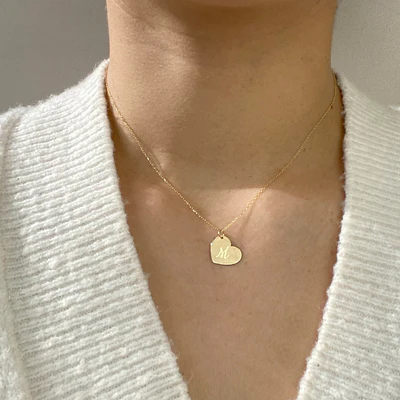

Los anillos artesanales o realizados a mano son aquellos que los fabrica un artesano joyero altamente cualificado, hechas a mano sin incluirse en ningún tipo de molde o maquinaria industrial para su elaboración. Por lo tanto, y hablando en general, la joyería artesanal hecha a mano ofrece al consumidor unas piezas que de verdad son únicas e irrepetibles. Además, teniendo en cuenta que el hecho de que se realicen a mano no significa que no se puedan personalizar hasta el más mínimo detalle.
debemos tener en cuenta que fabricar cualquier pieza de manera artesana, y en concreto anillos, es un proceso artesanal muy complejo que requiere experiencia, conocimientos y muchísimo talento. Las joyas artesanales son consideradas piezas de alta joyería, y los artesanos que las diseñan y originan podrían ser considerados artistas.
Un collar es un artículo de joyería que se usa alrededor del cuello. Los collares pueden haber sido uno de los primeros tipos de adornos usados por los humanos. A menudo sirven para fines ceremoniales, religiosos, mágicos o funerarios y también se usan como símbolos de riqueza y estatus, dado que comúnmente están hechos de metales y piedras preciosas.
El componente principal de un collar es la banda, cadena o cordón que envuelve el cuello. Estos se prestan con mayor frecuencia en metales preciosos como el oro, la plata y el platino. Los collares a menudo tienen accesorios adicionales suspendidos o insertados en el collar..
Estos accesorios generalmente incluyen colgantes, medallones, amuletos, cruces y materiales preciosos y semipreciosos como diamantes, perlas, rubíes, esmeraldas, granates y zafiros. Están hechos con muchos tipos diferentes de materiales y se utilizan para muchas cosas.
𝘈𝘓𝘎𝘜𝘕𝘖𝘚 𝘋𝘌 𝘕𝘜𝘌𝘚𝘛𝘙𝘖𝘚 𝘛𝘙𝘈𝘉𝘈𝘑𝘖𝘚

𝘊𝘰𝘭𝘭𝘢𝘳 𝘤𝘰𝘯 𝘪𝘯𝘪𝘤𝘪𝘢𝘭𝘦𝘴
Es una forma de expresar quién eres, de conectar con tus raíces y de llevar contigo algo que te es significativo. Ya sea para ti o para regalar, elegir un colgante con inicial es optar por una pieza única y llena de significado

𝘗𝘶𝘭𝘴𝘦𝘳𝘢𝘴 𝘱𝘭𝘢𝘵𝘦𝘢𝘥𝘢𝘴
Pueden ir relacionados desde sentimientos como el amor y la búsqueda de la protección personal a intentar atraer la buena fortuna.

𝘊𝘰𝘭𝘭𝘢𝘳𝘦𝘴 𝘥𝘰𝘳𝘢𝘥𝘰𝘴
Representa la intensidad de los sentimientos y la espiritualidad, la sensualidad humana y lo relativo a ella, como la delicadeza, la finura, el amor y la feminidad.